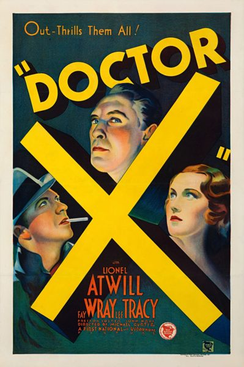

Doctor X
Studio: First National Pictures
Starring: Lee Tracy, Fay Wray, Lionel Atwill
Director: Michael Curtiz
Writer: Earl Baldwin
Producer: Hal B. Wallis, Darryl F. Zanuck
Doctor X is a 1932 American pre-Code mystery horror film produced jointly by First National and Warner Bros. Pictures. Based on the 1931 play Doctor X (originally titled Terror) by Howard W. Comstock and Allen C. Miller, it was directed by Michael Curtiz and stars Lionel Atwill, Fay Wray and Lee Tracy. Doctor X was produced before the Motion Picture Production Code was enforced.
Trivia
- Differences in takes are minor, such as Tracy's ad-lib with a skeleton in the closet, and Mae Busch's dialogue as a madam at a brothel.
- The black-and-white version was offered to exhibitors (much to Technicolor's dismay) as an alternative upon the initial release of the film.
- The film was produced in the pre-Code era of Hollywood and contains adult themes throughout, such as those of murder, cannibalism, prostitution, and rape.
Filming Locations
- Mystery of the Wax Museum was again shot in Technicolor to fulfill Warner Bros.' contract with Technicolor Inc., which ensured that no black-and-white cameras were present on the set.
Previous Showings
3 Runs • 0 Festivals
Original Billings: 1 run (August 28, 1932)
Original Run: August 28, 1932 (Sunday - Tuesday)
All runs on record (3):
- August 28, 1932 (Sunday - Tuesday)Lionel Atwill, Fay Wray
- October 30 - 31, 1990w/ The Bat Whispers
- September 21 - 23, 1994w/ Mystery of the Wax Museum